Party Builds
Every story mission and キズナクエスト asks you to rotate different companions into your squad, and a well-equipped party feeds Cross constant ソウルボイス healing, party-wide 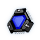 O.C.ギア bonuses, and guaranteed gold gear drops via
O.C.ギア bonuses, and guaranteed gold gear drops via
01 //  エルマ0/0 (0%)
エルマ0/0 (0%)
Present for nearly every Story Mission, Elma brings high Potential scaling, Ghost Factory party-wide Decoy, and Shadowstrike rear bursts. Setting up her palette below turns your mandatory squad leader into a reliable Overdrive partner and TP battery.
Elma combines Dual Guns and Dual Swords with the highest base Potential scaling among early party members. Under player control, Primer, Blood Sacrifice, Sliding Slinger, and Violent Streak build Overdrive count and TP rapidly, enabling Ghost Factory to grant party-wide Decoy while Shadowrunner and Hundred Shells deliver high back-attack Potential burst.
Control uses Player-Controlled Preferred (AI wastes TP on poorly timed Ghost Factory). Required for key Story and Affinity Missions (mandatory party-table locks were relaxed in Definitive Edition).
Stages
- Early / Mid-Game (Lv. 1, 49). Use Shadowstrike from behind to inflict Stagger for Lin's Wild Down Topple chain, weave Sliding Slinger from the side for TP, and maintain Primer before firing Stream Edge. Unlock Ghost Factory at Class Rank 13 for party-wide Decoy survival.
- Endgame (Lv. 60, Class Rank 20). Open with Blood Sacrifice and Primer to reach 3,000 TP, activate Overdrive, build count with Violent Streak and Sliding Slinger, maintain party Decoy via Ghost Factory, and activate Shadowrunner before Hundred Shells from behind (or Executioner in ranged Ether setups).
Gear. Melee uses ダイヤアシマー極 or Ether Dual Swords with 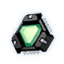 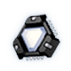 パーツクラッシャー and
パーツクラッシャー and  潜在力アップ. Ranged uses
潜在力アップ. Ranged uses  ビッグバンブキャⅡ極 with
ビッグバンブキャⅡ極 with  潜在力アップ and
潜在力アップ and  潜在力ブースト. Head/Torso/Arms/Legs Lightwear with innate
潜在力ブースト. Head/Torso/Arms/Legs Lightwear with innate  潜在力アップ,
潜在力アップ,  潜在力ブースト,
潜在力ブースト,
- Recruit via プロローグ / 第1章 ニューロサンゼルス, Prologue / Chapter 1 (freely swappable after Chapter 3).
- Reach Class Rank 20 for all 4 Skill Slots and rank Arts.
- Equip all 8 Arts and upgrade active palette Arts to Lv. 5.
- Equip Lv. 60
 デュアルソード and デュアルガン with target Augments.
デュアルソード and デュアルガン with target Augments.
| Done | Slot | Ability / Augment | Unlock | Role |
|---|---|---|---|---|
| Art 1 | デュアルガン Rk 13 | Party-wide Decoy (TP Green Support) for team invulnerability | ||
| Art 2 | クロスリロード | デュアルガン Rk 7 | Low-cooldown Green buff granting Critical Power and +200 TP | |
| Art 3 | ブラッドギア | Halves current HP to instantly grant +1,000 TP | ||
| Art 4 | シャドーランナー 1,000 TP | Blue Aura boosting Potential and back-attack damage while disabling enemy aggro | ||
| Art 5 | スライドバースト | デュアルガン Rk 1 | Multi-hit Yellow Ranged Art granting bonus TP from the side | |
| Art 6 | デュアルガン Rk 9 | Multi-hit Yellow Ranged Art building Overdrive counter and critical TP | ||
| Art 7 | ハンドレッドモータル 1,000 TP | 14-hit TP Melee nuke scaling off Potential with massive back-attack bonus | ||
| Art 8 | シャドーストライク | Guaranteed Stagger Melee Art with back-attack bonus (swap for Executioner in ranged Ether builds) | ||
| Skill 1/4 | ハウンドドッグ | Rk 16 | Extends Overdrive duration by +10 seconds | |
| Skill 2/4 | ファントムカウント | Rk 18 | Adds +12 initial Overdrive counter on activation | |
| Skill 3/4 | バックブレード | Rk 11 | Boosts melee damage by +125% when attacking from behind | |
| Skill 4/4 | クライシスビート | Rk 17 | Boosts critical chance and TP generation at low HP after Blood Sacrifice | |
| Augment | Weapon (up to 5 total across weapons/traits) | Endgame slot | ||
| Augment | アーツ＋TP XX | Weapon (1 slot) | Endgame slot | |
| Augment | Armor (5 slots) | Endgame slot | ||
| Augment | Weapon or Armor | Endgame slot |
02 //  リン0/0 (0%)
リン0/0 (0%)
Required alongside Elma in almost every main chapter, Lin anchors your frontline with Trash Talk aggro, Shield Wall mitigation, and Wild Down Topple chains. Use her progression card to keep her surviving heavy boss hits under AI control.
Lin is required in nearly every Story Mission and excels as an AI tank. Following Elma or Cross inflicting Stagger, Lin immediately chains Wild Down to Topple enemies, uses Trash Talk to hold aggro and generate TP under Morale, applies party Barrier via Shield Wall, and deals multi-hit Physical Res Down damage with Drum Roll.
Control uses AI-Controlled Optimal (reliable Wild Down Topple and Trash Talk TP generation). Required for key Story and Affinity Missions (mandatory party-table locks were relaxed in Definitive Edition).
Stages
- Early / Mid-Game (Lv. 1, 49). Prioritize upgrading Wild Down, Trash Talk, and Shield Wall first, and equip Long Topple plus Shield Screen so Lin keeps story bosses Toppled and mitigates damage.
- Endgame (Lv. 60, Class Rank 20). Equip Supershield (with Physical/Thermal Reflect gear if tanking superbosses) alongside Drum Roll, Wild Down, Shield Wall, and Bullet Storm for Overdrive hit count and Topple locking.
Gear. Melee uses ダイヤシールド極 or ダイヤエスクド極. Ranged uses ビッグバンマシン極 or Gatling Gun with Arts: アーツ＋TP. Heavy/Skell-wear or C&C wear with Max HP Up, Attribute Resistance Up, TPMAXアップ, and トレジャーセンサー when used as an AI Story companion.
- Recruit via 第1章 ニューロサンゼルス, Chapter 1 (freely swappable after Chapter 3).
- Reach Class Rank 20 for all 3 Skill Slots and rank Arts.
- Equip all 8 Arts and upgrade active palette Arts to Lv. 5.
- Equip Lv. 60
 シールド and
シールド and  ガトリングガン with target Augments.
ガトリングガン with target Augments.
| Done | Slot | Ability / Augment | Unlock | Role |
|---|---|---|---|---|
| Art 1 | ワイルドダウン 1,000 TP | Core Shield TP Art inflicting Topple | ||
| Art 2 | ドラムバッシュ 1,000 TP | Multi-hit Signature Shield TP Art inflicting Physical Res Down | ||
| Art 3 | ビッグタウント | Purple Taunt Art that generates large TP with Morale | ||
| Art 4 | シールドウォール | Green Support Art granting damage-absorbing Barrier to nearby allies | ||
| Art 5 | ストロングシールド 1,000 TP | Blue Aura reflecting Physical attacks and reducing damage taken | ||
| Art 6 | バレットストーム | Multi-hit Gatling Gun Art for building hit counts and Flinch | ||
| Art 7 | ファイアカーニバル | Multi-hit Thermal Gatling Gun Art | ||
| Art 8 | クールダウン | Clears debuffs and converts active Aura into emergency TP | ||
| Skill 1/3 | ラストスタンド | Rk 17 | Reduces damage taken by 30% while holding a Shield and boosts Knockback/Launch resistance | |
| Skill 2/3 | ストロングガード | Rk 13 | Reduces all damage taken by 20% when wielding a Shield | |
| Skill 3/3 | オーバーダウン | Rk 15 | Extends Topple duration by +2.0 seconds for party Topple-locking | |
| Augment | アーツ＋TP XX | Weapon (1-2 slots so AI spams Wild Down and Drum Roll) | Endgame slot | |
| Augment | TPMAXアップ XX | Armor (1 slot) | Endgame slot | |
| Augment | 反射＋ヒート | Weapon/Armor (optional with Supershield) | Endgame slot | |
| Augment | レジストダウナー XX | Weapon (for guaranteed Topple on high-resist Tyrants) | Endgame slot |
03 // イリーナ0/0 (0%)
Bringing Irina gives your squad its premier AI TP battery thanks to Last Stand granting 2,000 TP across the team alongside Smooth Recovery healing. Equipping the Knife and Assault Rifle bar below lets her fuel Cross's Overdrive in every boss fight.
Irina is the strongest pure AI support unit in the game. She possesses 4 Skill Slots and learns Last Stand (grants +2,000 TP to all allies at Lv. 5), Energy Source (grants +1,000 TP and Potential Up to an ally), Smooth Recovery (AoE heal + Evasion Up), Repair, and Assault Hammer (zero-TP Topple). She also enables the Screamer/Brainjack + Servant Sacrifice control combo.
Control uses AI-Controlled Optimal (S-tier AI support. Player-Controlled for Servant Sacrifice instant-kill setups). Restricted from joining the party during 第5章 マ・ノンの民 and 第7章 謀略.
Stages
- Early / Mid-Game (Lv. 10, 49). Keep Repair, Smooth Recovery, Assault Hammer, and Screamer active. Once Class Rank 14-15 is reached via Divine Roost or missions, unlock Energy Source and Last Stand to feed infinite TP to the entire team.
- Endgame (Lv. 60, Class Rank 20). Equip Ramjet Rifle II or Assault Rifle with Arts: Gain TP XX so AI Irina spams Last Stand and Energy Source nonstop, fueling Cross's Infinite Overdrive and Ghostwalker/Blossom Dance.
Gear. Melee uses ダイヤナイフ極. Ranged uses ダイヤハーセガ極 or Ramjet Rifle with Arts: アーツ＋TP. TPMAXアップ, トレジャーセンサー, ダブリキャ短縮, and Attribute Resistance Up.
- Recruit via 第3章クリアで加入, Post-Chapter 3 (add anytime via the Active Members menu in DE).
- Reach Class Rank 20 for all 4 Skill Slots and rank Arts.
- Equip all 8 Arts and upgrade active palette Arts to Lv. 5.
- Equip Lv. 60
 ナイフ and
ナイフ and  アサルトライフル with target Augments.
アサルトライフル with target Augments.
| Done | Slot | Ability / Augment | Unlock | Role |
|---|---|---|---|---|
| Art 1 | ラストウォー 1,000 TP | Signature TP Support Art granting up to +2,000 TP to all party members | ||
| Art 2 | エナジーポイント 1,000 TP | TP Support Art granting +1,000 TP and Potential Up to an ally | ||
| Art 3 | Signature AoE Green Heal granting Evasion Up to the party | |||
| Art 4 | メンテナンス | Fast low-cooldown single-target heal and debuff cleanse | ||
| Art 5 | アサルトハンマー | Zero-TP Melee Art inflicting Topple | ||
| Art 6 | ノーメディック 1,000 TP | Blue Aura granting debuff resistance and automatic self-revive | ||
| Art 7 | スクリーマー | AoE Purple Art inflicting Sleep (prevents enemy aggression) | ||
| Art 8 | アブソーバースキン | Grants damage Barrier to an ally (swap Screamer/Absorber Skin for Brainjack + Servant Sacrifice when farming controlled mobs) | ||
| Skill 1/4 | ハイテンション | Rk 13 | Increases Max TP by +1,500 so Irina holds 4,500+ base TP for Last Stand | |
| Skill 2/4 | キングギフト | Rk 18 | Automatically grants Barrier when healing allies | |
| Skill 3/4 | Rk 7 | Boosts Potential by +20%, increasing healing output | ||
| Skill 4/4 | メディックハンド | Rk 11 | Increases HP restored when reviving incapacitated allies | |
| Augment | アーツ＋TP XX | Weapon (2-3 slots for nonstop Last Stand) | Endgame slot | |
| Augment | TPMAXアップ XX | Armor (1-2 slots) | Endgame slot | |
| Augment | ギア＋TP XX | Armor (optional) | Endgame slot | |
| Augment | トレジャーセンサー XX | Armor (party drop rate cap 100%) | Endgame slot |
04 //  グイン0/0 (0%)
グイン0/0 (0%)
Required for key mid- and late-story missions, Gwin mirrors the Samurai Gunner Longsword kit with Offensive Stance and Thermal slashes. Investing a few minutes into his setup ensures smooth story clears and unlocks Cross's Ultraslash along the way.
Gwin mirrors the Samurai Gunner kit with Offensive Stance, Incendiary Edge, Ultraslash, Tornado Blade, and Assault Rifle utility (Power Dive Supercharge + total evasion frames, Decoy Round TP, Grenade Blitz). With Conflagrant Edge and Flame Trigger across his 3 Skill Slots, he deals respectable Thermal Longsword damage.
Control uses Player-Controlled Preferred (fragile under Offensive Stance when AI-piloted). Restricted during 第5章 マ・ノンの民 and 第7章 謀略. Requires at least 1 Affinity Heart with Gwin to unlock Affinity Mission Boot Camp (available after Chapter 10 and mandatory before Chapter 11); raise his Affinity early.
Stages
- Early / Mid-Game (Lv. 9, 49). Keep Gwin in the party early to reach 1 Affinity Heart for story progression. Pair Magnum Edge Physical Res Down with Ultraslash from behind and Tornado Blade under Offensive Stance for TP.
- Endgame (Lv. 60, Class Rank 20). Equip a Thermal Longsword, maintain Offensive Stance, use Power Dive to dodge lethal attacks while applying Supercharge into Incendiary Edge, and weave Grenade Blitz / Decoy Round in Overdrive.
Gear. Melee uses ダイヤスベルト極 with Thermal attribute or Bewitched Glaive:  妖刀 葉隠之赤錆 for pure Melee Arts. Ranged uses Assault Rifle with
妖刀 葉隠之赤錆 for pure Melee Arts. Ranged uses Assault Rifle with  潜在力アップ and Arts: アーツ＋TP. 格闘力アップ,
潜在力アップ and Arts: アーツ＋TP. 格闘力アップ,  潜在力アップ, TPMAXアップ.
潜在力アップ, TPMAXアップ.
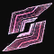
サムライガン- Recruit via 第3章クリアで加入, Post-Chapter 3 (add anytime via the Active Members menu in DE).
- Reach Class Rank 20 for all 3 Skill Slots and rank Arts.
- Equip all 8 Arts and upgrade active palette Arts to Lv. 5.
- Equip Lv. 60
 ロングソード and アサルトライフル with target Augments.
ロングソード and アサルトライフル with target Augments.
| Done | Slot | Ability / Augment | Unlock | Role |
|---|---|---|---|---|
| Art 1 | アグレッシブモード 1,000 TP | Core Longsword Blue Aura massively multiplying Melee Attack and Accuracy | ||
| Art 2 | バーニングソード 1,000 TP | Thermal TP Longsword Art scaling off Potential and melee combos | ||
| Art 3 | ウルトラスラッシュ | Signature Longsword Melee Art with strong back-attack multiplier | ||
| Art 4 | ソードマグナム | Melee Art inflicting Physical Res Down | ||
| Art 5 | ブレイドサイクロン | AoE Melee Art generating bonus TP while an Aura is active | ||
| Art 6 | パワードダイブ | Green Support Art granting evasion frames and Supercharge for Incendiary Edge | ||
| Art 7 | デコイショット | Purple Taunt Art generating TP under Morale and bridging Overdrive colors | ||
| Art 8 | Signature multi-hit Thermal Ranged Art | |||
| Skill 1/3 | Rk 11 | Boosts Melee Attack by +30% | ||
| Skill 2/3 | バニシングエッジ | Rk 18 | Boosts Thermal damage by +50% (or converts weapon auto/melee synergy) | |
| Skill 3/3 | フレイムトリガー | Rk 9 | Inflicts Blaze / boosts Thermal melee follow-up damage | |
| Augment | Weapon (5 slots) | Endgame slot | ||
| Augment | アーツ＋TP XX | Weapon (1 slot) | Endgame slot | |
| Augment | 格闘力アップ XX | Weapon / Armor | Endgame slot | |
| Augment | オーラリキャ短縮 XX | Armor (for rapid Ultraslash and Power Dive cycling) | Endgame slot |
05 //  ダグ0/0 (0%)
ダグ0/0 (0%)
Doug combines Photon Saber melee chains with Raygun beams across four generous Skill Slots, including Aura Assault and Supreme Sword. Follow his Beam synergy loadout below whenever you want steady AI melee pressure or need him for story chapters.
Doug has 4 Skill Slots alongside Aura Assault (+30% Melee Attack and Accuracy during an Aura), Supreme Sword (+100% melee combo bonus), and Beam Boost (+50% Beam damage). He chains fast Starfall Blade and Starfall Rondo into Starlight Duster or Galactic Cataclysm, while Phenomenon inflicts Ether Res Down for Core Crusher teammates and Gravity Blast inflicts ranged Topple.
Control uses Hybrid (Strong Player Melee Combo DPS, useful AI Ether Res Down + Gravity Blast Topple support). Available after Chapter 3 with no permanent departure (restricted from joining during 第9章 ラースの武人).
Stages
- Early / Mid-Game (Lv. 11, 49). Maintain Geolibrium for passive HP regen, chain Starfall Blade into Starfall Rondo and Starlight Duster, and use Gravity Blast at Rank 11 to Topple large mechanoids and theroids.
- Endgame (Lv. 60, Class Rank 20). Equip a Beam Photon Saber with Geolibrium or Astral Horizon active, chain Starfall Blade -> Starfall Rondo -> Galactic Cataclysm, and keep Phenomenon + Subterfuge for debuffing.
Gear. Melee uses ダイヤセイバー極 or ダイヤヴァッヘ極 (Beam Photon Saber). Ranged uses ビッグバンレイ極 with  潜在力アップ.
潜在力アップ.  潜在力アップ, 格闘力アップ, TPMAXアップ, Beam Attack/Resistance traits.
潜在力アップ, 格闘力アップ, TPMAXアップ, Beam Attack/Resistance traits.
- Recruit via 第3章クリアで加入, Post-Chapter 3 (add anytime via the Active Members menu in DE).
- Reach Class Rank 20 for all 4 Skill Slots and rank Arts.
- Equip all 8 Arts and upgrade active palette Arts to Lv. 5.
- Equip Lv. 60
 フォトンセイバー and
フォトンセイバー and  レイガン with target Augments.
レイガン with target Augments.
| Done | Slot | Ability / Augment | Unlock | Role |
|---|---|---|---|---|
| Art 1 | アストロクロス 1,000 TP | Blue Aura granting Beam Res Up, continuous HP regeneration, and terrain immunity | ||
| Art 2 | Fast low-cooldown Melee combo starter | |||
| Art 3 | Multi-hit Melee combo Art | |||
| Art 4 | ギャラクシーバスター 1,000 TP | High-scaling Beam TP Photon Saber finisher boosted under an Aura | ||
| Art 5 | Signature multi-hit TP Melee Art inflicting Gravity Res Down | |||
| Art 6 | Signature Melee Art dealing Ether damage and inflicting Ether Res Down | |||
| Art 7 | グラビティーブラスト | Zero-TP Raygun Art inflicting Topple | ||
| Art 8 | Purple Raygun Art inflicting Debuff Res Down and generating Overdrive TP | |||
| Skill 1/4 | Rk 16 | Multiplies Melee Attack and Melee Accuracy by 1.3x independently while an Aura is active | ||
| Skill 2/4 | Rk 17 | Boosts melee combo damage bonus by +100% | ||
| Skill 3/4 | ビームバースト | Rk 9 | Boosts Beam damage by +50% | |
| Skill 4/4 | Rk 7 | Boosts Potential by +20% for Galactic Cataclysm and Starlight Duster | ||
| Augment | Weapon (5 slots) | Endgame slot | ||
| Augment | アーツ＋TP XX | Weapon (1 slot) | Endgame slot | |
| Augment | Armor (for Galactic Cataclysm) | Endgame slot | ||
| Augment | オーラリキャ短縮 XX | Armor (for continuous Starfall chaining) | Endgame slot |
06 // ラオ0/0 (0%)
Available from Chapter 4 until the start of Chapter 9, Lao delivers long-range Sniper Rifle burst and Shock follow-ups with Afterburner. His streamlined mid-game loadout below carries him cleanly through his mandatory story appearances and Heart-to-Hearts.
Because Lao becomes permanently unavailable upon starting Chapter 9, his build focuses strictly on Chapters 4 through 8 progression. His Sniper Rifle kit combines Ghost Sniper, Eagle Eye, Hawkeye, Hair Trigger (Supercharge), Shrapnel, and his signature TP Art Afterburner with Killshot and Long Shot across his 3 Skill Slots for strong mid-game ranged burst.
Control uses Player-Controlled or Mid-Game AI Ranged DPS. MISSABLE PARTY MEMBER: Lao permanently leaves the party upon starting 第9章 ラースの武人. His Affinity Missions (パスファインダー for Balance Breaker and 恋のキューピッド for Afterburner, plus Doug's 盟友) are mandatory story prerequisites for Chapters 6–8 so they cannot be missed, but all 5 of Lao's Heart-to-Hearts ARE permanently missable if not completed beforehand. Any gear equipped on Lao is returned to inventory.
Stages
- Early / Mid-Game Only (Chapters 4–8, Lv. 15–40). Raise Lao to 1 Heart for The Matchmaker (mandatory before Chapter 8) and 5 Hearts for all 5 Heart-to-Hearts before starting Chapter 9. Stack Ranged Attack and Potential gear, activate Ghost Sniper or Eagle Eye + Hawkeye, apply Hair Trigger Supercharge, and fire Afterburner in ranged combos.
- Endgame (Lv. 60). Available through Chapter 8, transfer any invested Sniper Rifle and Javelin augments to Boze or Al.
Gear. Mid-game Shop or スナイパーライフル with  射撃力アップ and
射撃力アップ and  潜在力アップ, plus
潜在力アップ, plus  ジャベリン stat stick. Store-bought Grenada or Meredith armor with
ジャベリン stat stick. Store-bought Grenada or Meredith armor with  射撃力アップ,
射撃力アップ,  潜在力アップ, and TPMAXアップ. Remove custom augments before starting Chapter 9.
潜在力アップ, and TPMAXアップ. Remove custom augments before starting Chapter 9.
- Recruit via 第4章 グロウスの脅威, joins automatically during Chapter 4 (leaves permanently upon starting Chapter 9).
- Reach Class Rank 20 for all 3 Skill Slots and rank Arts.
- Equip all 8 Arts and upgrade active palette Arts to Lv. 5.
- Equip Lv. 60
 ジャベリン and
ジャベリン and  スナイパーライフル with target Augments.
スナイパーライフル with target Augments.
| Done | Slot | Ability / Augment | Unlock | Role |
|---|---|---|---|---|
| Art 1 | ゴーストスナイパー 1,000 TP | Blue Sniper Aura boosting critical chance, Ranged Accuracy, and critical TP gain | ||
| Art 2 | Signature multi-hit Sniper TP Art with massive ranged combo damage | |||
| Art 3 | マテリアルバースト | Ranged Sniper Art dealing heavy appendage damage | ||
| Art 4 | サイドワインダー | Ranged Sniper Art inflicting Debuff Res Down to set up Stun/Shock | ||
| Art 5 | インターセプト | Ranged Sniper Art inflicting Stun | ||
| Art 6 | サイトアップ | Green buff granting Ranged Accuracy Up and Ranged Attack Up | ||
| Art 7 | ホークアイ | Green buff granting Critical Power | ||
| Art 8 | パワードトリガー | Green Javelin buff granting Supercharge for the next Afterburner | ||
| Skill 1/3 | アイアンサイト | Rk 7 | Boosts critical hit damage bonus in ranged combos | |
| Skill 2/3 | ロングショット | Rk 15 | Increases ranged weapon firing range and safety | |
| Skill 3/3 | ハイテンションギア | Rk 18 | Grants TP when activating Overdrive | |
| Augment | Weapon (cheap craftable damage multiplier during Chapters 4-8) | Endgame slot | ||
| Augment | Armor (for Afterburner burst) | Endgame slot |
07 //  ルー0/0 (0%)
ルー0/0 (0%)
L pairs Shield mitigation with Psycho Launchers to cast party-wide Barrier shields, debuff cleanses, and Topple setups. Slot the defensive arts and Tank skills below whenever a prolonged ground battle calls for durable AI crowd control.
L pairs Shield and Psycho Launchers into one of the most durable AI support kits. He provides AoE party Barrier (Shield Wall), AoE HP heal + Potential Up for Cross's TP Arts (Mindstorm), +50 to all 6 attribute resistances (Astral Protection), Taunt TP generation (Trash Talk), and TWO separate Topple Arts (Wild Down and Starlight Kick).
Control uses AI-Controlled Optimal (elite party survivability. Player-Controlled for Double Reflect tanking). Available permanently from the end of Chapter 4 onward.
Stages
- Early / Mid-Game (Lv. 13, 49). Slot Mindstorm, Shield Wall, Wild Down, and Trash Talk immediately so L buffs party Potential, absorbs boss hits with Barriers, and chains Topple.
- Endgame (Lv. 60, Class Rank 20). Add Astral Protection and Starlight Kick for double Topple-locking and massive attribute resistance tanking, or run Supershield + Double Reflect under player control for multi-attribute Reflect invincibility.
Gear. Melee uses ダイヤシールド極. Ranged uses ビッグバンフワフワ極 or Psycho Launchers with Arts: アーツ＋TP. Attribute Resistance Up (to push Astral Protection past 100 total resistance), Max HP Up, TPMAXアップ, トレジャーセンサー.
- Recruit via 第4章 グロウス, Post-Chapter 4.
- Reach Class Rank 20 for all 3 Skill Slots and rank Arts.
- Equip all 8 Arts and upgrade active palette Arts to Lv. 5.
- Equip Lv. 60 シールド and サイコランチャー with target Augments.
| Done | Slot | Ability / Augment | Unlock | Role |
|---|---|---|---|---|
| Art 1 | マインドストーム | Signature Green AoE Art restoring party HP and granting Potential Up | ||
| Art 2 | シールドウォール | Grants damage-absorbing Barrier to nearby party members | ||
| Art 3 | スタープロテクション 1,000 TP | サイコランチャー Rk 13 | Blue Aura granting +50 to all 6 attribute resistances and healing on every Art | |
| Art 4 | ビッグタウント | Purple Taunt Art generating TP with Morale | ||
| Art 5 | ワイルドダウン 1,000 TP | Shield TP Art inflicting Topple | ||
| Art 6 | スターライト・ニー 1,000 TP | サイコランチャー Rk 15 | Psycho Launchers TP Art inflicting Gravity damage and Topple | |
| Art 7 | ラインザバッシュ | Shield Melee Art inflicting Slow Arts on bosses | ||
| Art 8 | スターリーレイ | サイコランチャー Rk 1 | Ranged Art inflicting Beam Res Down | |
| Skill 1/3 | ナイトソウル | Rk 17 | Increases Max TP by +1,500 so AI L maintains Astral Protection and both Topple Arts | |
| Skill 2/3 | ストロングガード | Rk 11 | Reduces all damage taken by 20% while holding a Shield | |
| Skill 3/3 | オーバーダウン | Rk 13 | Extends Topple duration by +2.0 seconds (swap for Double Reflect in player Supershield builds) | |
| Augment | アーツ＋TP XX | Weapon (2 slots) | Endgame slot | |
| Augment | レジストダウナー XX | Weapon (1 slot for Topple reliability) | Endgame slot | |
| Augment | エーテル耐性アップ XX | Armor (reaches 100+ Ether Res under Astral Protection) | Endgame slot |
08 //  フライ0/0 (0%)
フライ0/0 (0%)
Frye's signature Gatling Gun aura, Titan Recharge, grants complete immunity to enemy damage reflection right out of the box. Build his Thermal Gatling and Longsword palette below whenever you want carefree AoE firepower against reflect Tyrants.
Frye owns the unique Gatling Gun Blue Aura Titan Recharge, which completely negates enemy damage reflection without requiring Nullify Reflect augments while reducing Secondary Cooldown. Paired with high-hit Gatling Gun Arts (Bullet Twister, Bullet Storm, Missile Volley, Hellfire, Thermal Payload) and Machine Gunner across 3 Skill Slots, he shreds groups and Reflect Tyrants in Overdrive.
Control uses Player-Controlled Preferred. Joins the same active party as Phog after completing Affinity Mission 烏鳥私情のミッション.
Stages
- Early / Mid-Game (Lv. 16, 49). Use Missile Volley to inflict Thermal Res Down, build TP with Bullet Twister and Tornado Blade under Enhanced Stand, and burst with Thermal Payload on Toppled foes.
- Endgame (Lv. 60, Class Rank 20). Maintain Titan Recharge in Overdrive to pierce all enemy Reflects and slash Secondary Cooldowns, build instant 100 Overdrive count with Bullet Storm and Bullet Twister, and spam Hellfire + Thermal Payload.
Gear. Melee uses Longsword stat stick with  潜在力アップ and Ranged Attack Boost. Ranged uses ビッグバンマシン極 (Thermal/Physical Gatling Gun).
潜在力アップ and Ranged Attack Boost. Ranged uses ビッグバンマシン極 (Thermal/Physical Gatling Gun).  潜在力アップ,
潜在力アップ,  潜在力ブースト,
潜在力ブースト,  射撃力アップ, TPMAXアップ.
射撃力アップ, TPMAXアップ.
- Recruit via 飛竜乗雲のスコッチ, Post-Chapter 4.
- Reach Class Rank 20 for all 3 Skill Slots and rank Arts.
- Equip all 8 Arts and upgrade active palette Arts to Lv. 5.
- Equip Lv. 60 ロングソード and ガトリングガン with target Augments.
| Done | Slot | Ability / Augment | Unlock | Role |
|---|---|---|---|---|
| Art 1 | タイタンリロード 1,000 TP | Signature Blue Aura negating all enemy Reflects, healing on expiry, and cutting Secondary CD | ||
| Art 2 | バレットサイクロン | Signature high-hit Gatling Gun Art generating bonus TP under an Aura | ||
| Art 3 | バレットストーム | High-hit Gatling Gun Art rapidly maxing Overdrive count | ||
| Art 4 | ワイドミサイル | Thermal Gatling Gun Art inflicting Thermal Res Down | ||
| Art 5 | ヘルファイヤー 1,000 TP | High-hit Gatling Gun TP Art boosted while an Aura is active | ||
| Art 6 | アームドミサイル 1,000 TP | Thermal Gatling Gun TP Art dealing heavy bonus damage to Toppled targets | ||
| Art 7 | クールダウン | Green Support Art cleansing debuffs and extending Overdrive timer | ||
| Art 8 | ブレイドサイクロン | Melee Art generating TP while an Aura is active | ||
| Skill 1/3 | マシンガンソルジャー | Rk 17 | Boosts Ranged Attack when fighting 2 or more enemies (or swap Blazing Auto for single-target Thermal) | |
| Skill 2/3 | アイアンナックル | Rk 11 | Boosts Physical damage for Physical Gatling Hellfire setups | |
| Skill 3/3 | ブレイブハート | Rk 7 | Boosts Melee/Ranged stability and defensive resilience | |
| Augment | Weapon (5 slots) | Endgame slot | ||
| Augment | アーツ＋TP XX | Weapon (1 slot) | Endgame slot | |
| Augment | Armor (for Hellfire and Thermal Payload) | Endgame slot |
09 //  フォグ0/0 (0%)
フォグ0/0 (0%)
Unlike Elma's TP-hungry Ghost Factory, Phog learns zero-TP Ghostwalker alongside Primer and Dual Swords melee arts. Use this self-sufficient Dual Guns setup to field an evasive flanker who maintains his own Decoy stacks.
Unlike Elma (whose Ghost Factory costs 1,000 TP), Phog learns zero-TP Ghostwalker alongside Primer, Blood Sacrifice, Sliding Slinger, Shadowrunner, Executioner, Stream Edge, and Hundred Shells. Under player control, Phog runs virtually the exact same untouchable Full Metal Jaguar Infinite Overdrive loop as Cross.
Control uses Player-Controlled Optimal (top-3 player-controlled party member due to zero-TP Ghostwalker). Joins the same active party as Frye after completing Affinity Mission 烏鳥私情のミッション.
Stages
- Early / Mid-Game (Lv. 14, 49). Build Class Rank to 11 to unlock Ghostwalker. Use Primer + Sliding Slinger to build TP and chain Stream Edge in ranged combos.
- Endgame (Lv. 60, Class Rank 20). Run Ether Dual Guns (Ultra Nebulan Dyads II) or Dual Swords with Ghostwalker + Primer + Blood Sacrifice in Infinite Overdrive, dealing Potential-scaled burst with Executioner and Hundred Shells while untouchable under Decoy V/VI.
Gear. Melee uses ダイヤアシマー極 with  潜在力アップ. Ranged uses
潜在力アップ. Ranged uses  ビッグバンブキャⅡ極 (Ether Dual Guns) with
ビッグバンブキャⅡ極 (Ether Dual Guns) with  潜在力アップ and
潜在力アップ and  潜在力ブースト.
潜在力ブースト.  潜在力アップ,
潜在力アップ,  潜在力ブースト, ダブリキャ短縮.
潜在力ブースト, ダブリキャ短縮.
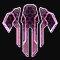
ソードファング- Recruit via 五里霧中の問題, Post-Chapter 4.
- Reach Class Rank 20 for all 3 Skill Slots and rank Arts.
- Equip all 8 Arts and upgrade active palette Arts to Lv. 5.
- Equip Lv. 60 デュアルソード and デュアルガン with target Augments.
| Done | Slot | Ability / Augment | Unlock | Role |
|---|---|---|---|---|
| Art 1 | ゴーストウォーカー | デュアルガン Rk 11 | Zero-TP Green Art granting self Decoy V/VI for guaranteed multi-hit evasion | |
| Art 2 | クロスリロード | デュアルガン Rk 7 | Fast Green buff granting Critical Power and +200 TP | |
| Art 3 | ブラッドギア | Halves HP to grant +1,000 TP on demand | ||
| Art 4 | シャドーランナー 1,000 TP | Blue Aura boosting Potential and back-attack damage | ||
| Art 5 | スライドバースト | デュアルガン Rk 1 | Yellow Ranged Art building Overdrive count and side TP | |
| Art 6 | エクスキューション 1,000 TP | デュアルガン Rk 10 | 12-hit Yellow TP Dual Guns nuke scaling off Potential | |
| Art 7 | ハンドレッドモータル 1,000 TP | 14-hit Orange TP Dual Swords nuke scaling off Potential from behind | ||
| Art 8 | ストリームエッジ 1,000 TP | Multi-hit Orange TP Melee Art boosted after ranged combos | ||
| Skill 1/3 | ハウンドドッグ | Rk 16 | Extends Overdrive duration by +10 seconds | |
| Skill 2/3 | ファントムカウント | Rk 18 | Grants +12 starting Overdrive count | |
| Skill 3/3 | バックブレード | Rk 11 | Boosts melee back-attack damage by +125% (or Agile Gunslinger for pure Executioner) | |
| Augment | Weapon (5 slots) | Endgame slot | ||
| Augment | アーツ＋TP XX | Weapon (1 slot) | Endgame slot | |
| Augment | Armor (5 slots) | Endgame slot |
10 //  ヒメリ0/0 (0%)
ヒメリ0/0 (0%)
Hope blends Knife buffs and Black Butterfly Ether Resistance Down with Psycho Launchers support across four Skill Slots. Bringing her setup below directly amplifies Cross's Ether Core Crusher damage against sturdy bosses.
Hope combines Knife support (Energy Source, Repair, Absorber Skin, Black Butterfly Ether Res Down, Secondary Speed) with Psycho Launchers utility (Astral Protection, Starlight Kick Topple, Tacit Censure Virus). As an AI companion for Ether Core Crusher teams, she feeds TP/Potential via Energy Source and applies Ether Res Down via Black Butterfly.
Control uses AI-Controlled Support (or Player-Controlled with Secondary Speed Aura). Available permanently once recruited.
Stages
- Early / Mid-Game (Lv. 21, 49). Equip Repair, Absorber Skin, Stellar Ray, and Shooting Star early, unlocking Energy Source at Rank 9 and Astral Protection + Starlight Kick at Ranks 11-12.
- Endgame (Lv. 60, Class Rank 20). Give Hope Arts: Gain TP XX and Resistance Reducer XX so she maintains Astral Protection, feeds Energy Source to Cross, inflicts Ether Res Down with Black Butterfly, and Topples with Starlight Kick.
Gear. Melee uses ダイヤナイフ極. Ranged uses ビッグバンフワフワ極 with Arts: アーツ＋TP. TPMAXアップ, Attribute Resistance Up, トレジャーセンサー.
- Recruit via NLAの聖女, Post-Chapter 3 (Lv. 21+, Basic Mission Marry Me! active; goes to Cauldros so waiting until Ch. 4–5 is fine).
- Reach Class Rank 20 for all 3 Skill Slots and rank Arts.
- Equip all 8 Arts and upgrade active palette Arts to Lv. 5.
- Equip Lv. 60 ナイフ and サイコランチャー with target Augments.
| Done | Slot | Ability / Augment | Unlock | Role |
|---|---|---|---|---|
| Art 1 | エナジーポイント 1,000 TP | Grants +1,000 TP and Potential Up to an ally | ||
| Art 2 | メンテナンス | Fast debuff cleanse and HP heal | ||
| Art 3 | アブソーバースキン | Applies Barrier to an ally | ||
| Art 4 | スタープロテクション 1,000 TP | サイコランチャー Rk 11 | Blue Aura granting +50 to all attribute resistances and HP heal per Art | |
| Art 5 | Inflicts Ether Res Down to amplify party Core Crusher damage | |||
| Art 6 | サイコランチャー Rk 10 | Signature Purple Art inflicting Virus (disables enemy ranged Arts) | ||
| Art 7 | スターライト・ニー 1,000 TP | サイコランチャー Rk 12 | Psycho Launchers TP Art inflicting Topple | |
| Art 8 | Signature Blue Aura cutting Secondary Cooldown and auto-attack intervals | |||
| Skill 1/3 | ナイトソウル | Rk 15 | Increases Max TP by +1,500 | |
| Skill 2/3 | Rk 7 | Boosts Potential by +20% for stronger heals | ||
| Skill 3/3 | バフヒール | Rk 9 | Restores HP to allies whenever applying a buff | |
| Augment | アーツ＋TP XX | Weapon (2 slots) | Endgame slot | |
| Augment | レジストダウナー XX | Weapon (1 slot for Virus, Ether Res Down, and Topple) | Endgame slot | |
| Augment | トレジャーセンサー XX | Armor | Endgame slot |
11 //  HB0/0 (0%)
HB0/0 (0%)
H.B. merges Shield tanking and Wild Down Topple with Assault Rifle's Last Stand party TP battery across four Skill Slots. Assemble his loadout below when you want a single AI companion handling both frontline aggro and team TP generation.
H.B. combines Shield tanking (Shield Wall, Wild Down, Trash Talk, Flamehand, 4 Skill Slots) with Assault Rifle's Last Stand (+2,000 party TP) and Decoy Round. Unlike Irina, H.B. brings heavy Shield mitigation (Shield Screen + Steel Flesh) and double Taunt TP generation, making him the sturdiest AI TP battery for post-game Tyrant fights.
Control uses AI-Controlled Optimal (alongside Irina, one of the two best AI TP batteries). Available permanently once recruited.
Stages
- Early / Mid-Game (Lv. 12, 49). Use Decoy Round, Power Dive, Atomic Hit, and Wild Down (Rank 7) + Shield Wall (Rank 9) to tank and Topple early Tyrants.
- Endgame (Lv. 60, Class Rank 20). Unlock Last Stand at Rank 15 and slot Arts: Gain TP XX + Trauma Tension so taking enemy aggro constantly fuels +2,000 TP Last Stand casts for the entire party.
Gear. Melee uses ダイヤシールド極. Ranged uses  アサルトライフル with Arts: アーツ＋TP and TPMAXアップ. Max HP Up, Attribute Resistance Up, TPMAXアップ, トレジャーセンサー.
アサルトライフル with Arts: アーツ＋TP and TPMAXアップ. Max HP Up, Attribute Resistance Up, TPMAXアップ, トレジャーセンサー.
- Recruit via 誇り高き探索者, Post-Chapter 3.
- Reach Class Rank 20 for all 4 Skill Slots and rank Arts.
- Equip all 8 Arts and upgrade active palette Arts to Lv. 5.
- Equip Lv. 60 シールド and アサルトライフル with target Augments.
| Done | Slot | Ability / Augment | Unlock | Role |
|---|---|---|---|---|
| Art 1 | ラストウォー 1,000 TP | Grants up to +2,000 TP to all party members | ||
| Art 2 | シールドウォール | Applies AoE damage Barrier to nearby allies | ||
| Art 3 | ワイルドダウン 1,000 TP | Shield TP Art inflicting Topple | ||
| Art 4 | ビッグタウント | Purple Shield Taunt generating TP with Morale | ||
| Art 5 | デコイショット | Purple Assault Rifle Taunt generating TP with Morale | ||
| Art 6 | フレームハンド 1,000 TP | Signature Blue Aura granting debuff resistance, terrain immunity, and counter spike | ||
| Art 7 | パワードダイブ | Grants evasion frames and Supercharge | ||
| Art 8 | アトミックバッシュ | Signature Shield Melee Art dealing bonus appendage damage | ||
| Skill 1/4 | ストロングガード | Rk 14 | Reduces all damage taken by 20% while holding a Shield | |
| Skill 2/4 | オーバーダウン | Rk 15 | Extends Topple duration by +2.0 seconds | |
| Skill 3/4 | 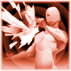 カウンターソウル |
Rk 16 | Grants a 15% chance to gain +300 TP every time H.B | |
| Skill 4/4 | スティールボディ | Rk 7 | Increases Max HP by +30% | |
| Augment | アーツ＋TP XX | Weapon (2 slots) | Endgame slot | |
| Augment | TPMAXアップ XX | Armor (2 slots so H.B. holds 5,000+ TP) | Endgame slot | |
| Augment | レジストダウナー XX | Weapon (1 slot for Wild Down Topple) | Endgame slot |
12 //  ボゼ0/0 (0%)
ボゼ0/0 (0%)
Bozé specializes in high-voltage Electric Javelin burst backed by Conductive Strike for triple damage against Shocked targets. His Sniper and Javelin progression below rewards players who enjoy lining up massive single-hit Arcing Horn strikes.
Boze specializes in Electric Javelin burst and Shock damage-over-time. His 3 Skill Slots fit Conductive Strike (+300% Electric damage to Shocked targets), Electric Boost (+50% Electric damage), and Knock 'n' Shock, turning Arcing Horn (Electric Res Down) + Hair Trigger (Supercharge) + Trident Buster under Raijin (Electric Reflect + heal on Art) into massive Electric spikes.
Control uses Player-Controlled Preferred. Available permanently once recruited.
Stages
- Early / Mid-Game (Lv. 20, 49). Chain Spiral Horn -> Arcing Horn -> Vortex under Raijin to inflict Electric Res Down and Stun while healing on every Art.
- Endgame (Lv. 60, Class Rank 20). Equip an Electric Javelin, maintain Raijin (add Reflect augments on armor for multi-attribute Reflect invincibility), inflict Shock and Electric Res Down with Trident Buster and Arcing Horn, then apply Hair Trigger before secondary/tertiary Trident Buster.
Gear. Melee uses ダイヤスピア極 or Ultra Diamond Bolide / Electric Javelin with  潜在力アップ. Ranged uses ビッグバンフランコ極 with
潜在力アップ. Ranged uses ビッグバンフランコ極 with  潜在力アップ and
潜在力アップ and  潜在力ブースト.
潜在力ブースト.  潜在力アップ,
潜在力アップ,  潜在力ブースト, 格闘力アップ.
潜在力ブースト, 格闘力アップ.
- Recruit via アヴァランチの破戒僧, Post-Chapter 5.
- Reach Class Rank 20 for all 3 Skill Slots and rank Arts.
- Equip all 8 Arts and upgrade active palette Arts to Lv. 5.
- Equip Lv. 60 ジャベリン and スナイパーライフル with target Augments.
| Done | Slot | Ability / Augment | Unlock | Role |
|---|---|---|---|---|
| Art 1 | Blue Aura reflecting Electric attacks, boosting critical rate, and healing HP on Art use | |||
| Art 2 | トライデントバスター 1,000 TP | Electric TP Javelin nuke inflicting Shock and scaling with Conductive Strike | ||
| Art 3 | アークホーン | Electric Javelin Art inflicting Electric Res Down | ||
| Art 4 | パワードトリガー | Green Support Art granting Supercharge for Trident Buster | ||
| Art 5 | ボルテックス | Signature AoE Electric Javelin Art inflicting Stun in melee combos | ||
| Art 6 | スパイラルホーン | Javelin Art inflicting Physical Res Down | ||
| Art 7 | フラッシュカウント | 3-hit Javelin Art inflicting Fatigue and scaling with high HP | ||
| Art 8 | サイドワインダー | Sniper Rifle Art inflicting Debuff Res Down so Shock lands reliably | ||
| Skill 1/3 | エンチャントボルト | Rk 16 | Boosts Electric damage dealt to Shocked enemies by +300% | |
| Skill 2/3 | バーストサンダー | Rk 13 | Boosts Electric damage by +50% | |
| Skill 3/3 | 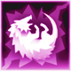 インパクトサンダー |
Rk 14 | Grants melee Arts a chance to inflict Shock to keep Conductive Strike active | |
| Augment | Weapon (5 slots) | Endgame slot | ||
| Augment | アーツ＋TP XX | Weapon (1 slot) | Endgame slot | |
| Augment | Armor | Endgame slot | ||
| Augment | 反射＋物理 | Weapon/Armor (pairs with Raijin Aura) | Endgame slot |
13 //  イエルヴ0/0 (0%)
イエルヴ0/0 (0%)
As one of only two companions who learn Synchrony for a flat 12% boost to all Skell stats, Yelv shines both as a Dedicated Skell pilot and as a Photon Saber Beam attacker. Check off his skills below before handing him an endgame frame.
Yelv is one of only TWO party members who learn Synchrony (+12% to all Skell stats), making him an elite AI Skell pilot. On foot under player control, his signature Art Essence Exchange swaps HP and TP, letting him enter any battle at 0 TP and instantly gain 5,000+ TP on frame 1 for immediate Overdrive + Astrolibrium (Beam Reflect + Beam Damage Up). Remove Essence Exchange if running AI Yelv on foot.
Control uses AI-Controlled in Skells (top-2 Skell pilot with Alexa). Player-Controlled on Ground (AI misuses Essence Exchange at 0 TP). Available permanently once recruited.
Stages
- Early / Mid-Game (Lv. 14, 49). Under player control, open battles with Essence Exchange -> Geolibrium or Astrolibrium -> Astral Heal, chaining Starfall Blade and Starfall Rondo. Remove Essence Exchange whenever Yelv is AI-controlled on foot so he does not swap 0 TP into 0 HP and die instantly.
- Endgame (Lv. 60, Class Rank 20). For Skell combat, equip Synchrony in his Skill bar and place him in a Lv. 60 Lailah Queen, Mastema, or Ares 90. For player ground combat, run Beam Photon Saber with Essence Exchange, Astrolibrium, Starfall combo, and Galactic Cataclysm.
Gear. Melee uses ダイヤヴァッヘ極 (Beam Photon Saber). Ranged uses ビッグバンレイ極. Skell Pilot: ドールスーツ with Drive traits (e.g., Ranged Attack Drive). Ground:  潜在力アップ and 格闘力アップ.
潜在力アップ and 格闘力アップ.
- Recruit via イエルヴとの出会い, Post-Chapter 3 (Lv. 14+).
- Reach Class Rank 20 for all 3 Skill Slots and rank Arts.
- Equip all 8 Arts and upgrade active palette Arts to Lv. 5.
- Equip Lv. 60 フォトンセイバー and レイガン with target Augments.
| Done | Slot | Ability / Augment | Unlock | Role |
|---|---|---|---|---|
| Art 1 | Signature Green Art swapping HP and TP for instant 3,000+ TP at battle start (Player-only, swap for Geolibrium on AI) | |||
| Art 2 | Blue Aura reflecting Beam attacks and boosting Beam damage | |||
| Art 3 | Fast Melee combo opener | |||
| Art 4 | Multi-hit Melee combo Art | |||
| Art 5 | 流星桜花 | Melee combo Art granting front-positional TP | ||
| Art 6 | ギャラクシーバスター 1,000 TP | Beam TP Photon Saber finisher boosted under Astrolibrium | ||
| Art 7 | スターヒール 1,000 TP | TP Green Art restoring HP after Essence Exchange (and Skell appendage HP) | ||
| Art 8 | Purple Raygun Art building Overdrive TP | |||
| Skill 1/3 | 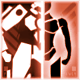 心機一体 |
Rk 17 | Boosts all piloted Skell stats (Melee/Ranged Attack, Accuracy, Evasion, Defense) by +12% (swap for Knight's Soul on pure ground builds) | |
| Skill 2/3 | ビームバースト | Rk 9 | Boosts ground Beam damage by +50% | |
| Skill 3/3 | Rk 15 | Boosts ground melee combo bonus by +100% | ||
| Augment | Ground Weapon (5 slots) | Endgame slot | ||
| Augment | 反射＋物理 | Ground Weapon/Armor (with Astrolibrium) | Endgame slot | |
| Augment | トレジャーセンサー XX | Skell-wear Armor (works even while inside a Skell) | Endgame slot |
14 //  アクセナ0/0 (0%)
アクセナ0/0 (0%)
Alexa shares the rare Synchrony skill for 12% higher Skell stats while wielding Javelin and Assault Rifle on foot. Follow her progression below to turn her into your premier AI mech wingmate for Tyrant and appendage farming.
Alexa is the ultimate Skell specialist and the only other party member besides Yelv with Synchrony (+12% all Skell stats), plus Stellar Entry (grants GP when boarding a Skell). On foot, she combines Javelin Electric burst (Raijin + Arcing Horn + Hair Trigger + Trident Buster), Assault Hammer Topple, and her signature 12-hit TP Art Maximum Voltage (massive multiplier if her Skell was wrecked).
Control uses AI-Controlled Optimal in Skells (tied with Yelv as #1 AI Skell pilot). Player-Controlled for Maximum Voltage ground nuke. Available permanently once recruited.
Stages
- Early / Mid-Game (Lv. 16, 49). Use Arcing Horn, Spiral Horn, Overwhelm, Power Dive, and Assault Hammer on foot until Chapter 6 unlocks Skells, then make Alexa a permanent Skell pilot.
- Endgame (Lv. 60, Class Rank 20). Equip Synchrony + Stellar Entry + High Tension with full Skell-wear (Drive traits) and assign Alexa a 1+ insurance Lv. 60 Skell (Lailah Queen, Mastema, Hraesvelg Lord, or Ares 90) which she pilots without ever consuming insurance.
Gear. Melee uses ダイヤスピア極. Ranged uses  アサルトライフル with
アサルトライフル with  潜在力アップ and Arts: アーツ＋TP. ドールスーツ with Ranged/Melee Attack Drive and GP Drive traits, plus トレジャーセンサー.
潜在力アップ and Arts: アーツ＋TP. ドールスーツ with Ranged/Melee Attack Drive and GP Drive traits, plus トレジャーセンサー.
- Recruit via ニュースター, Post-Chapter 4.
- Reach Class Rank 20 for all 3 Skill Slots and rank Arts.
- Equip all 8 Arts and upgrade active palette Arts to Lv. 5.
- Equip Lv. 60 ジャベリン and アサルトライフル with target Augments.
| Done | Slot | Ability / Augment | Unlock | Role |
|---|---|---|---|---|
| Art 1 | Blue Aura reflecting Electric attacks and healing HP on Art use | |||
| Art 2 | Signature 12-hit TP Javelin nuke (massive damage spike after Skell destruction) | |||
| Art 3 | トライデントバスター 1,000 TP | Electric TP Javelin Art inflicting Shock | ||
| Art 4 | アークホーン | Electric Javelin Art inflicting Electric Res Down | ||
| Art 5 | パワードトリガー | Grants Supercharge for Maximum Voltage or Trident Buster | ||
| Art 6 | スパイラルホーン | Javelin Art inflicting Physical Res Down | ||
| Art 7 | アサルトハンマー | Zero-TP Assault Rifle Topple Art | ||
| Art 8 | パワードダイブ | Evasion frames + Supercharge | ||
| Skill 1/3 | 心機一体 | Rk 17 | Increases all stats of Alexa's piloted Skell by +12% | |
| Skill 2/3 | 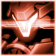 スターライド |
Rk 16 | Grants bonus GP upon boarding a Skell in combat for faster Skell Overdrive | |
| Skill 3/3 | バーストサンダー | Rk 11 | Boosts ground Electric Javelin damage by +50% (or High Tension for +1,500 Max TP) | |
| Augment | トレジャーセンサー XX | Armor (helps reach 100% party Treasure Sensor while piloting Skell) | Endgame slot | |
| Augment | Ground Weapon | Endgame slot | ||
| Augment | Ground Weapon/Armor (if running Maximum Voltage build) | Endgame slot |
15 //  マードレス0/0 (0%)
マードレス0/0 (0%)
Murderess swaps Dual Guns evasion for Psycho Launchers' Astral Protection, granting +50 resistance to all elements alongside continuous art healing. Her setup below creates a resilient Dual Swords attacker who unlocks Seventh Edge for your squad.
Murderess trades Dual Guns Decoy for Psycho Launchers' Astral Protection (+50 all attribute resistances + heal on Art) and her signature Topple Art Gravity Lunge, while gaining Aura Assault (+30% independent melee damage & accuracy) and Hellhound across 3 Skill Slots, plus Seventh Edge for fast AoE TP generation into Hundred Shells.
Control uses Player-Controlled Preferred (decent AI survivability via Astral Protection). Available permanently once recruited.
Stages
- Early / Mid-Game (Lv. 20, 49). Chain Stellar Ray or Jetstream into Seventh Edge to build TP rapidly, activate Shadowrunner, and strike from behind with Back Slash.
- Endgame (Lv. 60, Class Rank 20). Maintain Astral Protection (reaching 100+ attribute resistances via armor) or Shadowrunner, weave Stellar Ray -> Seventh Edge for TP, Topple with Gravity Lunge, and burst from behind with Hundred Shells.
Gear. Melee uses ダイヤアシマー極. Ranged uses ビッグバンフワフワ極 with  潜在力アップ and
潜在力アップ and  潜在力ブースト.
潜在力ブースト.  潜在力アップ,
潜在力アップ,  潜在力ブースト, Attribute Resistance traits.
潜在力ブースト, Attribute Resistance traits.
- Recruit via すべては私の夢のため, Post-Chapter 5.
- Reach Class Rank 20 for all 3 Skill Slots and rank Arts.
- Equip all 8 Arts and upgrade active palette Arts to Lv. 5.
- Equip Lv. 60 デュアルソード and サイコランチャー with target Augments.
| Done | Slot | Ability / Augment | Unlock | Role |
|---|---|---|---|---|
| Art 1 | スタープロテクション 1,000 TP | サイコランチャー Rk 12 | Blue Aura boosting all 6 attribute resistances by +50 and healing on Art use | |
| Art 2 | シャドーランナー 1,000 TP | Offensive Blue Aura boosting Potential and back-attack damage | ||
| Art 3 | ハンドレッドモータル 1,000 TP | 14-hit Potential-scaled Dual Swords TP nuke | ||
| Art 4 | Signature Dual Swords Art generating large TP in ranged combos | |||
| Art 5 | サイコランチャー Rk 10 | Signature Gravity TP Art inflicting Topple | ||
| Art 6 | バックスラッシュ | Positional Dual Swords Melee Art | ||
| Art 7 | サイドスラッシュ | Positional Dual Swords Art inflicting Fatigue | ||
| Art 8 | スターリーレイ | サイコランチャー Rk 3 | Ranged combo starter inflicting Beam Res Down for Seventh Edge | |
| Skill 1/3 | Rk 15 | Multiplies Melee Attack and Accuracy by 1.3x while Astral Protection or Shadowrunner is active | ||
| Skill 2/3 | ハウンドドッグ | Rk 17 | Extends Overdrive duration by +10 seconds | |
| Skill 3/3 | ハイテンション | Rk 11 | Increases Max TP by +1,500 | |
| Augment | Weapon (5 slots) | Endgame slot | ||
| Augment | アーツ＋TP XX | Weapon (1 slot) | Endgame slot | |
| Augment | Armor | Endgame slot |
16 //  ナギ0/0 (0%)
ナギ0/0 (0%)
Matching Cross's Drifter class with five full Skill Slots and innate access to both Blossom Dance and True Stream Edge, Nagi is the hardest-hitting companion on Mira. Use his Potential Longsword card below whenever you want a second boss shredder.
Nagi is the ONLY party member with 5 Skill Slots (matching Cross's Drifter class) and naturally owns both Blossom Dance (ignores all enemy attribute resistances, 6-hit Potential nuke) and True Stream Edge, plus Offensive Stance and Yamato Spirit. With Ether Longsword + Potential stacking (or Bewitched Glaive: Receding Rust), player-controlled Nagi deletes post-game Tyrants in seconds.
Control uses Player-Controlled Optimal (#1 highest-damage non-Cross ground character). Restricted from joining Story Missions in Chapters 9 through 12, but fully usable in all Affinity/Normal Missions, Tyrant hunting, and Chapter 13 Story Missions.
Stages
- Mid-Game Upon Recruitment (Chapter 8+, Lv. 33, 49). Grind Nagi to Class Rank 10 immediately to unlock Blossom Dance alongside his starting True Stream Edge and Rank 8 Offensive Stance.
- Endgame (Lv. 60, Class Rank 20). Equip Bewitched Glaive:
 妖刀 葉隠之赤錆 or ダイヤスベルト極 with 5x Appendage Crusher and full Potential Up/Boost XX armor. Activate Overdrive -> Offensive Stance -> Magnum Edge -> True Stream Edge (refills TP via Yamato Spirit) -> Blossom Dance.
妖刀 葉隠之赤錆 or ダイヤスベルト極 with 5x Appendage Crusher and full Potential Up/Boost XX armor. Activate Overdrive -> Offensive Stance -> Magnum Edge -> True Stream Edge (refills TP via Yamato Spirit) -> Blossom Dance.
Gear. Melee uses Bewitched Glaive:  妖刀 葉隠之赤錆 (Ether Longsword) or ダイヤスベルト極. Ranged uses Gatling Gun stat stick with
妖刀 葉隠之赤錆 (Ether Longsword) or ダイヤスベルト極. Ranged uses Gatling Gun stat stick with  潜在力アップ and
潜在力アップ and  潜在力ブースト. Head/Torso/Arms/Legs with
潜在力ブースト. Head/Torso/Arms/Legs with  潜在力アップ,
潜在力アップ,  潜在力ブースト, 格闘力アップ.
潜在力ブースト, 格闘力アップ.
- Recruit via MIA, Post-Chapter 8.
- Reach Class Rank 20 for all 5 Skill Slots and rank Arts.
- Equip all 8 Arts and upgrade active palette Arts to Lv. 5.
- Equip Lv. 60 ロングソード and ガトリングガン with target Augments.
| Done | Slot | Ability / Augment | Unlock | Role |
|---|---|---|---|---|
| Art 1 | 桜花乱舞 1,000 TP | Signature 6-hit TP Longsword Art scaling off Potential and bypassing all enemy attribute resistances | ||
| Art 2 | アグレッシブモード 1,000 TP | Blue Aura multiplying total Melee Attack and Accuracy (also boosts Blossom Dance output) | ||
| Art 3 | Signature 5-hit AoE Longsword Art generating massive TP with Morale and Yamato Spirit | |||
| Art 4 | ソードマグナム | Fast Longsword Art inflicting Physical Res Down | ||
| Art 5 | Low-cooldown Longsword Melee filler | |||
| Art 6 | Longsword Art inflicting Thermal Res Down | |||
| Art 7 | クールダウン | Green Gatling Gun Art extending Overdrive timer and cleansing debuffs | ||
| Art 8 | バレットストーム | Multi-hit Yellow Gatling Gun Art for fast initial Overdrive count | ||
| Skill 1/5 | Rk 14 | Grants massive bonus TP when using Melee Arts (+60 TP per hit with Morale) | ||
| Skill 2/5 | Rk 9 | Boosts Melee Attack by +30% | ||
| Skill 3/5 | Rk 17 | Grants +500 TP to all party members upon activating Overdrive | ||
| Skill 4/5 | スティールボディ | Rk 7 | Increases Max HP by +30% to offset Offensive Stance defense penalty | |
| Skill 5/5 | バトルボディ | Rk 15 | Further increases Max HP by +50% (total +80% HP tankiness under Offensive Stance) | |
| Augment | Weapon (5 slots) | Endgame slot | ||
| Augment | アーツ＋TP XX | Weapon (1 slot) | Endgame slot | |
| Augment | Armor (5 slots) | Endgame slot |
17 //  セリカ0/0 (0%)
セリカ0/0 (0%)
Celica pairs Knife support with Dual Guns evasion, giving her access to zero-TP Ghostwalker, Smooth Recovery, Black Butterfly Ether debuffs, and Zero Zero. Build her kit below for virtually untouchable ranged support alongside Ether attackers.
Celica owns arguably the most synergistic defensive/ranged weapon pairing in the game: Knife + Dual Guns. She learns Ghostwalker, Primer, Zero Zero (10-hit ranged Art generating massive Overdrive count and TP), Executioner, Full Specs (+Potential & +Ranged Attack Aura), Energy Source, Black Butterfly (Ether Res Down), and Black Bane.
Control uses Player-Controlled Optimal (also strong AI Energy Source + Ghostwalker survivor). Available permanently once recruited.
Stages
- Mid-Game Upon Recruitment (Chapter 9+, Lv. 30, 49). Rank Celica to Class Rank 11 to unlock Zero Zero and Ghostwalker alongside Primer, Sliding Slinger, Full Specs, and Energy Source.
- Endgame (Lv. 60, Class Rank 20). Equip Ether Dual Guns (Ultra Nebulan Dyads II) + Ether Knife, maintain Ghostwalker + Full Specs in Infinite Overdrive (Primer -> Zero Zero jumps Overdrive counter by +20 hits instantly), inflict Ether Res Down via Black Butterfly, and nuke with Executioner and Black Bane.
Gear. Melee uses ダイヤナイフ極 (Ether). Ranged uses  ビッグバンブキャⅡ極 (Ether Dual Guns) with
ビッグバンブキャⅡ極 (Ether Dual Guns) with  潜在力アップ and
潜在力アップ and  潜在力ブースト.
潜在力ブースト.  潜在力アップ,
潜在力アップ,  潜在力ブースト, ダブリキャ短縮.
潜在力ブースト, ダブリキャ短縮.
- Recruit via 二人の事情, Post-Chapter 9 (Lv. 44+, requires Manhunt).
- Reach Class Rank 20 for all 3 Skill Slots and rank Arts.
- Equip all 8 Arts and upgrade active palette Arts to Lv. 5.
- Equip Lv. 60 ナイフ and デュアルガン with target Augments.
| Done | Slot | Ability / Augment | Unlock | Role |
|---|---|---|---|---|
| Art 1 | ゴーストウォーカー | デュアルガン Rk 11 | Zero-TP Green Art granting self Decoy V/VI | |
| Art 2 | クロスリロード | デュアルガン Rk 5 | Fast Green buff granting Critical Power, +200 TP, and 2x Green->Yellow Overdrive hit bonus | |
| Art 3 | デュアルガン Rk 10 | Signature 10-hit Dual Guns Art (+20 Overdrive counter right after Primer) | ||
| Art 4 | フルスペック 1,000 TP | Blue Aura boosting Potential, Ranged Attack, and Ether Resistance | ||
| Art 5 | エクスキューション 1,000 TP | デュアルガン Rk 13 | 12-hit TP Dual Guns nuke scaling off Potential | |
| Art 6 | Knife Art dealing Ether damage and inflicting Ether Res Down | |||
| Art 7 | Signature Ether Knife Art scaling steeply per debuff on the enemy | |||
| Art 8 | スクリーマー | Purple Sleep Art (adds debuff tier for Black Bane and generates 1,000 TP in max Overdrive, swap for Energy Source on AI) | ||
| Skill 1/3 | Rk 9 | Boosts Potential by +20% | ||
| Skill 2/3 | ディープマインド | Rk 16 | Increases Max TP by +1,500 | |
| Skill 3/3 | フォーカスハンド | Rk 7 | Boosts Ranged Accuracy by +30% | |
| Augment | Weapon (5 slots) | Endgame slot | ||
| Augment | アーツ＋TP XX | Weapon (1 slot) | Endgame slot | |
| Augment | Armor (5 slots) | Endgame slot |
18 //  ミーア0/0 (0%)
ミーア0/0 (0%)
Rewarding the player who completes her five-continent adventure chain, Mia arrives with stellar 140% Ranged Attack and Potential coefficients plus Beam Raygun and Knife synergy. Her endgame palette below turns Mira's rookie explorer into a serious beam cannon.
Despite arriving late, Mia boasts the highest base Ranged Attack and Potential coefficients (140% each) among base companions and learns Ether Boost (+50%), Beam Boost (+50%), Inner Search (+20% Potential), and Tactical Analyst (debuff resistance reduction). Under Full Specs, her Ether Blast and signature Beam Bomber hit extremely hard alongside Black Butterfly Ether Res Down and Gravity Blast Topple.
Control uses Hybrid (High-damage Player Ether/Beam Raygunner, solid AI Energy Source + Topple/Debuff support). Late-game optional recruit, permanently available once Mia Is Missing! is cleared.
Stages
- Late-Game Upon Recruitment (Chapter 11+, Lv. 45, 59). Take Mia to Divine Roost for 2 minutes to max her Class Rank, unlocking Energy Source, Beam Bomber, Black Butterfly, and Gravity Blast.
- Endgame (Lv. 60, Class Rank 20). Equip an Ether Raygun with Ether Boost + Inner Search + Tactical Analyst, maintain Full Specs, inflict Debuff Res Down (Subterfuge) + Ether Res Down (Black Butterfly), Topple with Gravity Blast, and nuke with Ether Blast and Beam Bomber.
Gear. Melee uses ダイヤナイフ極 with  潜在力アップ. Ranged uses ビッグバンレイ極 (Ether attribute).
潜在力アップ. Ranged uses ビッグバンレイ極 (Ether attribute).  潜在力アップ,
潜在力アップ,  射撃力アップ, Attribute Resistance Up (for survival without Decoy).
射撃力アップ, Attribute Resistance Up (for survival without Decoy).
- Recruit via
 ミーアの最後, Post-Chapter 11 (requires all 4 prior Mia quests, Definian Downfall, and 65% Cauldros survey).
ミーアの最後, Post-Chapter 11 (requires all 4 prior Mia quests, Definian Downfall, and 65% Cauldros survey). - Reach Class Rank 20 for all 3 Skill Slots and rank Arts.
- Equip all 8 Arts and upgrade active palette Arts to Lv. 5.
- Equip Lv. 60 ナイフ and レイガン with target Augments.
| Done | Slot | Ability / Augment | Unlock | Role |
|---|---|---|---|---|
| Art 1 | フルスペック 1,000 TP | Blue Aura boosting Potential, Ranged Attack, and Ether Resistance | ||
| Art 2 | High-scaling Ether TP Raygun nuke boosted under an Aura | |||
| Art 3 | ビームボンバー | Signature multi-hit Raygun Art boosted under an Aura | ||
| Art 4 | ビームブラスト | Multi-hit Raygun Art boosted under an Aura | ||
| Art 5 | Knife Art inflicting Ether Res Down | |||
| Art 6 | Purple Raygun Art inflicting Debuff Res Down and generating Overdrive TP | |||
| Art 7 | グラビティーブラスト | Zero-TP Raygun Art inflicting Topple | ||
| Art 8 | エナジーポイント 1,000 TP | Green TP Art granting +1,000 TP and Potential Up | ||
| Skill 1/3 | バーストエーテル | Rk 13 | Boosts Ether damage by +50% (swap for Beam Boost if using a Beam Raygun) | |
| Skill 2/3 | Rk 7 | Boosts Potential by +20% for Ether Blast | ||
| Skill 3/3 | 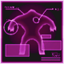 アナライザー |
Rk 17 | Lowers enemy debuff resistances so Topple, Sleep, and Ether Res Down land reliably | |
| Augment | Weapon (5 slots) | Endgame slot | ||
| Augment | アーツ＋TP XX | Weapon (1 slot) | Endgame slot | |
| Augment | Armor | Endgame slot |
19 //  リーゼル0/0 (0%)
リーゼル0/0 (0%)
Joining in Chapter 6 alongside her Hraesvelg frame, Liesel unites Electric Javelin burst with Dual Guns Ghostwalker and Primer. Follow her setup below to enjoy high-voltage Javelin combos backed by effortless personal Decoy evasion.
Added in Definitive Edition, Liesel pairs Javelin with Dual Guns, giving Electric Javelin access to zero-TP Ghostwalker, Primer, Sliding Slinger, and her exclusive Art Effect Charge (guarantees the positional or combo bonus on the next Art without setup, letting Trident Buster get its ranged-combo bonus or Sliding Slinger get its side TP bonus unconditionally). With Conductive Strike + Electric Boost + Hellhound across 3 Skill Slots, she is both untouchable and lethal.
Control uses Player-Controlled Optimal. New Definitive Edition character, permanently available once recruited.
Stages
- Mid-Game Upon Recruitment (Chapter 6+, Lv. 24, 49). Use Primer, Effect Charge -> Sliding Slinger for instant TP, Raijin for Electric Reflect/healing, and Arcing Horn until Ghostwalker and Trident Buster unlock at Ranks 13 and 15.
- Endgame (Lv. 60, Class Rank 20). Run Infinite Overdrive with Ghostwalker + Primer + Violent Streak/Sliding Slinger, maintain Raijin, inflict Electric Res Down (Arcing Horn), chain Effect Charge + Hair Trigger -> Trident Buster for massive Shock + Conductive Strike burst.
Gear. Melee uses ダイヤスピア極 (Electric Javelin). Ranged uses  ビッグバンブキャⅡ極 with
ビッグバンブキャⅡ極 with  潜在力アップ and
潜在力アップ and  潜在力ブースト.
潜在力ブースト.  潜在力アップ,
潜在力アップ,  潜在力ブースト, ダブリキャ短縮.
潜在力ブースト, ダブリキャ短縮.
- Recruit via 新たなるドール, Post-Chapter 6 (Lv. 24+).
- Reach Class Rank 20 for all 3 Skill Slots and rank Arts.
- Equip all 8 Arts and upgrade active palette Arts to Lv. 5.
- Equip Lv. 60 ジャベリン and デュアルガン with target Augments.
| Done | Slot | Ability / Augment | Unlock | Role |
|---|---|---|---|---|
| Art 1 | ゴーストウォーカー | デュアルガン Rk 13 | Zero-TP Green Art granting self Decoy V/VI | |
| Art 2 | クロスリロード | デュアルガン Rk 4 | Fast Green buff granting Critical Power and +200 TP | |
| Art 3 | デュアルガン Rk 2 | Signature Dual Guns Art guaranteeing positional/combo bonus on next Art | ||
| Art 4 | スライドバースト | デュアルガン Rk 1 | Yellow Ranged Art building Overdrive counter and bonus TP (guaranteed after Effect Charge) | |
| Art 5 | Blue Aura boosting critical rate, reflecting Electric attacks, and healing per Art | |||
| Art 6 | トライデントバスター 1,000 TP | Electric TP Javelin nuke inflicting Shock (combo bonus guaranteed after Effect Charge) | ||
| Art 7 | アークホーン | Electric Javelin Art inflicting Electric Res Down | ||
| Art 8 | パワードトリガー | Green Javelin Art granting Supercharge before Trident Buster | ||
| Skill 1/3 | エンチャントボルト | Rk 13 | Boosts Electric damage against Shocked enemies by +300% | |
| Skill 2/3 | バーストサンダー | Rk 14 | Boosts Electric damage by +50% | |
| Skill 3/3 | ハウンドドッグ | Rk 17 | Extends Overdrive duration by +10 seconds | |
| Augment | Weapon (5 slots) | Endgame slot | ||
| Augment | アーツ＋TP XX | Weapon (1 slot) | Endgame slot | |
| Augment | Armor (5 slots) | Endgame slot |
20 //  ニール・ネール0/0 (0%)
ニール・ネール0/0 (0%)
Neilnail transforms endgame gear farming with her zero-TP Purple Art Heroic Tale, raising an enemy's drop tier by up to six levels so Level 61 foes drop Level 66 Ultra Diamond and Ultra Nebulan weapons. Keep her setup below in every treasure-hunting squad.
Neilnail revolutionizes endgame weapon farming with her signature zero-TP Purple Art Heroic Tale, which inflicts Control, raises the target enemy's level by +1 to +6 (pushing Lv. 60-65 Tyrants over the Lv. 66 threshold required to drop Ultra Infinite / Ultra Diamond / Ultra Nebulan tier gear), and upgrades drop chest rank. In combat, her 4 Skill Slots (Aura Assault, Supreme Sword, Fast Forward, Inner Search/Ether Boost) + Astral Protection + Blood Sacrifice + Hundred Shells make her a durable high-DPS fighter.
Control uses Hybrid (Mandatory AI Farming Companion for Heroic Tale, strong Player/AI Melee DPS). New Definitive Edition character, permanently available once recruited.
Stages
- Mid-Game Upon Recruitment (Chapter 5+, Lv. 21, 49). Use Blood Sacrifice -> Shadowrunner -> Back Slash / Side Slash -> Hundred Shells (Rank 8), unlocking Astral Protection at Rank 11 and Heroic Tale at Rank 13.
- Endgame (Lv. 60, Class Rank 20). For weapon farming, put Neilnail in the AI party with Heroic Tale equipped and Resistance Reducer XX on her weapon so she upgrades Lv. 61-65 Tyrants into Lv. 66+ Ultra-tier loot pinatas before Cross kills them. For general combat, maintain Astral Protection + Fast Forward + Aura Assault.
Gear. Melee uses ダイヤアシマー極. Ranged uses ビッグバンフワフワ極. トレジャーセンサー,  潜在力アップ, Attribute Resistance Up.
潜在力アップ, Attribute Resistance Up.
- Recruit via クリューの考古学者, Post-Chapter 5 (Lv. 21+).
- Reach Class Rank 20 for all 4 Skill Slots and rank Arts.
- Equip all 8 Arts and upgrade active palette Arts to Lv. 5.
- Equip Lv. 60 デュアルソード and サイコランチャー with target Augments.
| Done | Slot | Ability / Augment | Unlock | Role |
|---|---|---|---|---|
| Art 1 | サイコランチャー Rk 13 | Signature zero-TP Purple Art raising enemy level (+1 to +6 for Lv | ||
| Art 2 | スタープロテクション 1,000 TP | サイコランチャー Rk 11 | Blue Aura granting +50 to all 6 attribute resistances and HP heal per Art | |
| Art 3 | シャドーランナー 1,000 TP | Offensive Blue Aura boosting Potential and back-attack damage | ||
| Art 4 | ブラッドギア | Halves HP to grant +1,000 TP instantly | ||
| Art 5 | ハンドレッドモータル 1,000 TP | 14-hit TP Dual Swords nuke from behind | ||
| Art 6 | バックスラッシュ | Fast positional Melee combo Art | ||
| Art 7 | サイドスラッシュ | Positional Melee combo Art inflicting Fatigue | ||
| Art 8 | スターライト・ニー 1,000 TP | サイコランチャー Rk 14 | Psycho Launchers TP Art inflicting Topple (swap for Conduction Rise + Shooting Star in Shock builds) | |
| Skill 1/4 | Rk 9 | Multiplies Melee Attack and Accuracy by 1.3x while Astral Protection or Shadowrunner is active | ||
| Skill 2/4 | Rk 13 | Boosts melee combo bonus by +100% | ||
| Skill 3/4 | 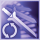 スピードギミック |
Rk 17 | Reduces cooldowns of melee combo Arts by 50% | |
| Skill 4/4 | Rk 16 | Boosts Potential by +20% (swap for Ether Boost when wielding Ether Dual Swords) | ||
| Augment | レジストダウナー XX | Weapon (2-3 slots on AI farming build so Heroic Tale lands on high-level Tyrants) | Endgame slot | |
| Augment | トレジャーセンサー XX | Armor (helps reach 100% party Treasure Sensor alongside Heroic Tale) | Endgame slot | |
| Augment | Weapon (on DPS setup) | Endgame slot |
21 // Post-Ch. 10 Recruit · 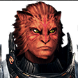
ガ・デルグ0/0 (0%)
Recruited after Chapter 10, this Wrothian commander brings a complete Galactic Knight Beam Photon Saber and Raygun kit across four Skill Slots, making him an immediate melee powerhouse.
Ga Jiarg wields Photon Saber and Raygun with 4 Skill Slots containing the full Galactic Knight dream kit: Beam Boost (+50%), Aura Assault (1.3x melee), Supreme Sword (+100% melee combo), and Fast Forward (50% melee combo CD cut). His signature TP Art Sky Sunder deals massive Beam damage scaling with enemy debuff count, which he stacks via Subterfuge, Pathogen Blast, Myopic Screen, and his AoE debuff-spreader Bahamut Wave.
Control uses Player-Controlled Preferred (solid AI Beam/Topple bruiser). New Definitive Edition playable character (spoiler-flagged: Wrothian Prince and former Chapter 9 boss). Uses exclusive Qlurian and custom body armor slots.
Stages
- Late-Game Upon Recruitment (Chapter 10+, Lv. 42, 59). Activate Astrolibrium for Beam Reflect and Beam Damage Up, chain Starfall Blade -> Starfall Rondo -> Sky Sunder, and use Gravity Blast for Topple.
- Endgame (Lv. 60, Class Rank 20). Equip Beam Photon Saber + Reflect augments (Physical/Ether/Thermal) to become invincible under Astrolibrium, apply Subterfuge + Pathogen Blast (spread to groups via Bahamut Wave), and rapidly cycle Starfall Blade/Rondo/Blossom into Sky Sunder and Galactic Cataclysm.
Gear. Melee uses ダイヤヴァッヘ極 (Beam Photon Saber). Ranged uses ビッグバンレイ極 with  潜在力アップ. Combat armor (non-casual wear) with
潜在力アップ. Combat armor (non-casual wear) with  潜在力アップ, 格闘力アップ, and Reflect traits.
潜在力アップ, 格闘力アップ, and Reflect traits.
- Recruit via 協力, Post-Chapter 10 (Lv. 42+).
- Reach Class Rank 20 for all 4 Skill Slots and rank Arts.
- Equip all 8 Arts and upgrade active palette Arts to Lv. 5.
- Equip Lv. 60 フォトンセイバー and レイガン with target Augments.
| Done | Slot | Ability / Augment | Unlock | Role |
|---|---|---|---|---|
| Art 1 | Blue Aura reflecting Beam attacks and boosting Beam damage | |||
| Art 2 | Signature Beam TP Photon Saber nuke scaling with number of debuffs on target | |||
| Art 3 | ギャラクシーバスター 1,000 TP | Beam TP Photon Saber finisher boosted under Astrolibrium | ||
| Art 4 | Fast Melee combo opener | |||
| Art 5 | Multi-hit Melee combo Art | |||
| Art 6 | 流星桜花 | Melee combo Art generating front-positional TP | ||
| Art 7 | Purple Raygun Art inflicting Debuff Res Down and building Overdrive TP | |||
| Art 8 | Signature Purple Raygun Art spreading active debuffs to nearby enemies (swap for Gravity Blast against single bosses for Topple) | |||
| Skill 1/4 | ビームバースト | Rk 9 | Boosts Beam damage by +50% | |
| Skill 2/4 | Rk 13 | Multiplies Melee Attack and Accuracy by 1.3x under Astrolibrium | ||
| Skill 3/4 | Rk 14 | Boosts melee combo bonus by +100% | ||
| Skill 4/4 | スピードギミック | Rk 17 | Cuts cooldown of melee combo Arts by 50% | |
| Augment | Weapon (5 slots) | Endgame slot | ||
| Augment | アーツ＋TP XX | Weapon (1 slot) | Endgame slot | |
| Augment | Armor (for Sky Sunder and Galactic Cataclysm) | Endgame slot | ||
| Augment | 反射＋物理 | Weapon/Armor (pairs with Astrolibrium Beam Reflect) | Endgame slot |
22 // Ch. 13 Recruit ·  アル0/0 (0%)
アル0/0 (0%)
Joining during the Chapter 13 epilogue, this veteran pilot pairs Longsword's zero-TP Hercules Blow with Sniper Rifle ranged openers across four Skill Slots for explosive Melee Attack scaling.
Al combines Longsword and Sniper Rifle across 4 Skill Slots. Unlike Blossom Dance (a TP Art scaling off Potential), Al's signature Longsword Art Hercules Blow is a zero-TP Melee Art scaling directly off Melee Attack and weapon attribute (boosted further at lower HP), while his Sniper Rifle signature TP Art Howling Soul simultaneously buffs the entire party's Melee Attack, Ranged Attack, and Potential AND revives a fallen ally.
Control uses Hybrid (Elite Player Melee Burst. S-Tier AI Omni-Buffer with Howling Soul + Grand Procession). New Definitive Edition story character (spoiler-flagged for central Chapter 13 hero of the White Whale, joins at Lv. 50 alongside Ares Prime). Permanently assigned to Ares Prime as his Skell until 第13章 後編 英雄 is completed.
Stages
- Chapter 13 Progression (Lv. 50, 59). Max Al's Class Rank quickly at Divine Roost to unlock Hercules Blow (Rank 11), Incendiary Edge (Rank 14), Howling Soul (Rank 15), Conflagrant Edge, and Grand Procession.
- Endgame (Lv. 60, Class Rank 20). Equip a Thermal Longsword with Melee Attack Up XX, maintain Offensive Stance, apply Thermal Res Down (Burning Slash) + Physical Res Down (Magnum Edge) + Critical Power (Hawkeye), cast Howling Soul to buff the entire party, and spam Hercules Blow + Incendiary Edge.
Gear. Melee uses ダイヤスベルト極 (Thermal attribute) or Bewitched Glaive:  妖刀 葉隠之赤錆 for pure Physical/Ether Hercules Blow. Ranged uses ビッグバンフランコ極 with 格闘力アップ and Arts: アーツ＋TP. 格闘力アップ,
妖刀 葉隠之赤錆 for pure Physical/Ether Hercules Blow. Ranged uses ビッグバンフランコ極 with 格闘力アップ and Arts: アーツ＋TP. 格闘力アップ,  潜在力アップ, TPMAXアップ, Aura: オーラリキャ短縮.
潜在力アップ, TPMAXアップ, Aura: オーラリキャ短縮.
- Recruit via 第13章 前編 因果, joins during Chapter 13 (Act 1) (Post-Chapter 12; temporarily absent during Act 3 until completed).
- Reach Class Rank 20 for all 4 Skill Slots and rank Arts.
- Equip all 8 Arts and upgrade active palette Arts to Lv. 5.
- Equip Lv. 60 ロングソード and スナイパーライフル with target Augments.
| Done | Slot | Ability / Augment | Unlock | Role |
|---|---|---|---|---|
| Art 1 | アグレッシブモード 1,000 TP | Blue Aura multiplying total Melee Attack and Accuracy | ||
| Art 2 | Signature zero-TP Longsword Melee nuke scaling off Melee Attack (higher multiplier at lower HP) | |||
| Art 3 | Signature Sniper TP Support Art buffing party Melee Attack, Ranged Attack, and Potential + reviving an ally | |||
| Art 4 | バーニングソード 1,000 TP | Thermal TP Longsword Art boosted in melee combos | ||
| Art 5 | Thermal Longsword Art inflicting Thermal Res Down | |||
| Art 6 | ブレイドサイクロン | AoE Longsword Art generating TP while Offensive Stance is active | ||
| Art 7 | ソードマグナム | Fast Longsword Art inflicting Physical Res Down | ||
| Art 8 | ホークアイ | Green Sniper Rifle buff granting Critical Power | ||
| Skill 1/4 | Rk 9 | Boosts Melee Attack by +30% | ||
| Skill 2/4 | バニシングエッジ | Rk 13 | Boosts Thermal damage by +50% | |
| Skill 3/4 | Rk 17 | Grants +500 TP to all party members whenever Al activates Overdrive | ||
| Skill 4/4 | スティールボディ | Rk 7 | Increases Max HP by +30% to survive Offensive Stance | |
| Augment | Weapon (5 slots) | Endgame slot | ||
| Augment | 格闘力アップ XX | Weapon / Armor (maximizes Hercules Blow) | Endgame slot | |
| Augment | オーラリキャ短縮 XX | Armor (2-3 slots for rapid Hercules Blow cycling) | Endgame slot | |
| Augment | アーツ＋TP XX | Weapon (1 slot for Howling Soul and Offensive Stance) | Endgame slot |